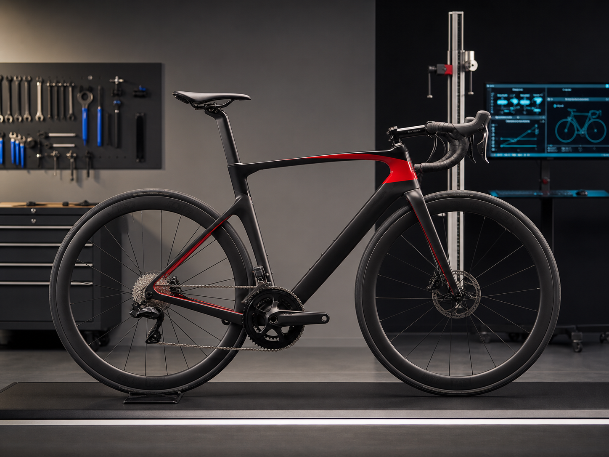
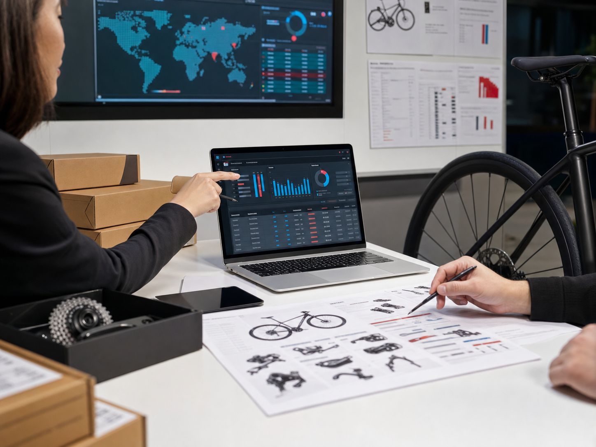

Local video slot
XDS factory film placeholder.
This panel is reserved for an authorized XDS/X-LAB factory video. Once the local MP4 is available, replace the file and it will play directly on this page.
From raw carbon fiber to complete bicycles, X-LAB manufacturing turns vertical integration into stable quality, controllable launch timing and partner delivery confidence.
This route follows the PPT logic: manufacturing is not an internal feature list. It is the confidence layer behind distributors, dealers, stores and riders.
This panel is reserved for an authorized XDS/X-LAB factory video. Once the local MP4 is available, replace the file and it will play directly on this page.

Layup schedule, material intake, frame platform control.

Rim profile, stiffness targets, platform fit validation.

Batch discipline, final tuning, complete-bicycle QA.

Allocation, lead time, service parts, market launch.
X-LAB factory capability is not only capacity. Aerodynamics, carbon layup and wheelset structure are developed as one system to reduce drag, lift rolling efficiency and hold lateral stiffness under load.

Frame profiles, cockpit integration and rim-platform matching are validated around air flow, helping the complete bicycle cut resistance before speed is handed back to the rider.
Proprietary carbon cloth stacking controls fiber direction, material intake and stiffness zones, so the frame platform can balance weight, strength and ride response.
Integrated carbon wheel construction improves rim consistency, rolling efficiency and lateral rigidity while keeping the wheelset aligned with the frame's aerodynamic targets.
Supplier materials and components enter with clear inspection gates and traceability.
Production windows and model allocation help partners plan launches and inventory.
Parts, warranty and fit knowledge move downstream with the bicycle.